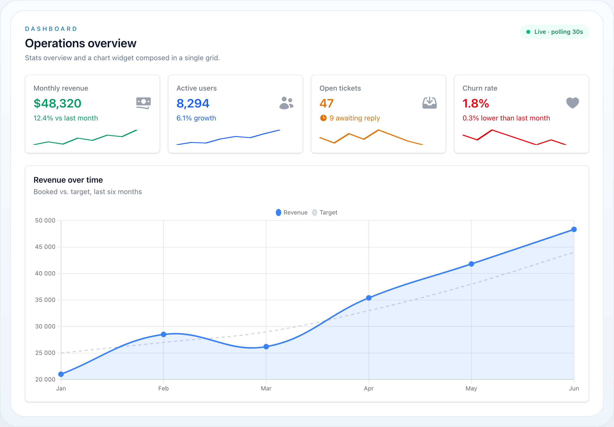

Core
Widgety
Modul Widget poskytuje dashboardové komponenty — stat karty, charty, vložené tabulky a vlastní pohledy. Widgety žijí ve wire-core a lze je skládat do responzivních grid layoutů na jakékoli Livewire komponentě.


Jeden chart widget s nadpisem, popisem a živým filtrem kvartálu.

Čistě CSS sloupce: vertikální finance, vertikální systémové metriky s mřížkou a horizontální postup.
Na této stránce
- Typy widgetů přehledně
- Obsah
- Widget Base
- StatsOverviewWidget
- Základní použití
- Sloupce gridu
- StatsOverviewWidget API
- Stat
- Kompletní příklad
- Sparkline chart
- Stat API
- ChartWidget
- Základní použití
- Typy chartů
- Dynamická data s closurami
- Dropdown filtr
- ChartWidget API
- Konvenční widgety
- Chart.js options
- BarChartWidget
- Finanční sloupce
- Systémové metriky (vertikální, s mřížkovými čárami)
- Systémové metriky (horizontální)
- Jak se resolvuje výška výplně
- Bezpečné barvy
- Validace
- BarChartWidget API
- ChartItem
- ChartItem API
- TableWidget
- Základní použití
- TableWidget API
- CustomWidget
- Základní použití
- CustomWidget API
- Polling
- Použití
- Polling API
- Dashboard layout (WithWidgets)
- Použití
- Blade šablona
- WithWidgets API
- Rozhraní HasWidgets
- Autorizace
- Reference Widget API
- Widget (základní třída)
- Blade komponenty
Modul Widget poskytuje dashboardové komponenty — stat karty, charty, vložené tabulky a vlastní pohledy. Widgety žijí ve wire-core a lze je skládat do responzivních grid layoutů na jakékoli Livewire komponentě.
Každý widget sdílí stejný fluent builder, takže nadpis, viditelnost, autorizace, column span a polling fungují identicky napříč všemi čtyřmi typy.
Typy widgetů přehledně
| Widget | Třída | Nejlepší pro |
|---|---|---|
| Stats overview | StatsOverviewWidget |
KPI, počítadla a souhrnné metriky s volitelnými sparkliny |
| Chart | ChartWidget |
Line, bar, pie a doughnut charty poháněné Chart.js |
| Chart presety | LineChartWidget / PieChartWidget / DoughnutChartWidget |
Deklarativní ChartWidget presety (pie/doughnut ukazují legendu ve výchozím stavu) |
| Bar chart | BarChartWidget |
Čistě CSS vertikální/horizontální sloupce (finance, systém) — bez JavaScriptu |
| Table | TableWidget |
Kompaktní wire-table vložený do dashboardové karty |
| Custom | CustomWidget |
Jakýkoli Blade pohled vykreslený jako widget |
Míchejte typy widgetů volně uvnitř jednoho
WithWidgetsdashboardu — každý widget řídí svůj vlastní column span, viditelnost a interval obnovení. Viz Dashboard layout.
Obsah
- Widget Base
- StatsOverviewWidget
- Stat
- ChartWidget
- BarChartWidget
- ChartItem
- TableWidget
- CustomWidget
- Polling
- Dashboard layout (WithWidgets)
- Autorizace
- Reference Widget API
Widget Base
Všechny widgety rozšiřují NyonCode\WireCore\Widgets\Widget — abstraktní třídu implementující Htmlable.
use NyonCode\WireCore\Widgets\Widget;Každý widget podporuje:
->heading(?string $heading) // titulek widgetu->description(?string $description) // podtitulek->lazy(bool $lazy = true) // odložit vykreslení->columnSpan(int|string $span) // column span gridu (1-12, 'full')->extraAttributes(array $attrs) // vlastní HTML atributy->hidden(bool|Closure $hidden) // řízení viditelnosti->visible(bool|Closure $visible) // řízení viditelnosti->permission(string $permission) // autorizace přes Gate->authorize(string $ability) // autorizace přes Gate ability->authorizeUsing(Closure $callback) // vlastní autorizační callbackWidgety se vykreslují přes Blade pohledy a podporují toHtml() / __toString() pro přímý výstup.
StatsOverviewWidget
Grid stat karet — ideální pro KPI, počítadla a souhrnné metriky.
Nakonfigurovaný počet sloupců je desktop layout: grid se vždy sbalí
na jeden sloupec na mobilu a dva od breakpointu sm, rostoucí na
nakonfigurovaný počet (max 4) na velkých obrazovkách.
use NyonCode\WireCore\Widgets\StatsOverviewWidget;use NyonCode\WireCore\Widgets\Stat;Základní použití
StatsOverviewWidget::make() ->heading('Overview') ->columns(3) ->stats([ Stat::make('Total Revenue', '$45,231') ->description('12% increase') ->descriptionIcon('arrow-up') ->color('success'), Stat::make('New Users', '1,234') ->description('3% decrease') ->descriptionIcon('arrow-down') ->color('danger'), Stat::make('Orders', '856') ->description('Same as last month') ->color('gray'), ])Sloupce gridu
->columns(int $columns) // 1-4 sloupce (oříznuto)Výchozí jsou 3 sloupce. Grid je responzivní.
StatsOverviewWidget API
->stats(array $stats) // pole instancí Stat->getStats(): array->columns(int $columns) // sloupce gridu (1-4)->getGridColumns(): intStat
Jednotlivá stat karta uvnitř StatsOverviewWidget.
use NyonCode\WireCore\Widgets\Stat;Kompletní příklad
Stat::make('Monthly Revenue', '$12,430') ->description('8% increase from last month') ->descriptionIcon('arrow-up') ->color('success') ->icon('currency-dollar') ->chart([7, 3, 4, 5, 6, 3, 5, 8]) ->extraAttributes(['class' => 'ring-2 ring-green-200'])Sparkline chart
->chart(array $data) // pole numerických datových bodů pro SVG sparklineStat::make('Active Users', '2,847') ->chart([12, 15, 18, 14, 22, 25, 28, 32]) ->color('primary')Stat API
Stat::make(string $label, string $value)->description(?string $description) // sekundární text->descriptionIcon(?string $icon) // ikona vedle popisu->color(?string $color) // libovolný klíč barvy palety (např. 'success', 'danger', 'primary')->icon(?string $icon) // ikona stat karty->chart(array $data) // sparkline datové body (int|float)->extraAttributes(array $attrs) // vlastní HTML atributy->getLabel(): string->getValue(): string->getDescription(): ?string->getDescriptionIcon(): ?string->getColor(): ?string->getIcon(): ?string->getChart(): ?array->hasChart(): boolChartWidget
Chart widget s integrací Chart.js. Podporuje line, bar, pie a doughnut charty.
use NyonCode\WireCore\Widgets\ChartWidget;Vyžaduje Chart.js. Widget vykreslí
<canvas>a inicializuje ho přes Alpine. Zahrňte Chart.js na stránku — přes CDN nebo váš bundle — nebo canvas zůstane prázdný a zaloguje se varování v konzoli. Stylování datasetů (borderColor,fill,tension, …) se předává rovnou do Chart.js.Vlastní Alpine controller widgetu od vás nepotřebuje nic: dodává se jako bundle balíčku a widget si ho vyzvedne, když se vykresluje. Grafy jsou těžký, volitelný asset, takže záměrně není v sadě
@wireStackScriptsnačítané vždy.
Základní použití
ChartWidget::make() ->heading('Revenue Over Time') ->type('line') ->labels(['Jan', 'Feb', 'Mar', 'Apr', 'May', 'Jun']) ->datasets([ [ 'label' => 'Revenue', 'data' => [1200, 1900, 3000, 5000, 2300, 3200], 'borderColor' => '#3B82F6', ], ])Typy chartů
->type('line') // line chart (výchozí)->type('bar') // bar chart->type('pie') // pie chart->type('doughnut') // doughnut chartDynamická data s closurami
Datasety a labely přijímají closury. Aktivní hodnota filtru se předá jako argument:
ChartWidget::make() ->heading('Sales') ->type('bar') ->filter(['2025' => '2025', '2026' => '2026'], '2026') ->labels(fn (?string $filter) => match($filter) { '2025' => ['Q1', 'Q2', 'Q3', 'Q4'], '2026' => ['Q1', 'Q2'], default => [], }) ->datasets(fn (?string $filter) => [ ['label' => 'Sales', 'data' => $filter === '2025' ? [100, 200, 150, 300] : [180, 250]], ])Dropdown filtr
->filter(array $options, ?string $default = null)Přidá dropdown filtr na widget. Vybraná hodnota se předá dataset/label closurám.
ChartWidget::make() ->heading('Revenue') ->filter([ 'week' => 'This Week', 'month' => 'This Month', 'year' => 'This Year', ], 'month')ChartWidget API
->type(string $type) // 'line', 'bar', 'pie', 'doughnut'->getType(): string->datasets(array|Closure $datasets) // formát datasetu Chart.js->getDatasets(): array->labels(array|Closure $labels) // labely osy x->getLabels(): array->filter(array $options, ?string $default) // options dropdown filtru->getFilterOptions(): ?array->hasFilter(): bool->getActiveFilter(): ?string->activeFilter(?string $filter) // nastavit aktivní filtr programově->options(array $options) // Chart.js options sloučené přes výchozí typu->getOptions(): arrayKonvenční widgety
Deklarativní presety nad ChartWidget, takže dashboard vyjadřuje záměr místo ->type(...):
use NyonCode\WireCore\Widgets\DoughnutChartWidget;use NyonCode\WireCore\Widgets\LineChartWidget;use NyonCode\WireCore\Widgets\PieChartWidget; LineChartWidget::make()->heading('Revenue')->labels([...])->datasets([...]);PieChartWidget::make()->heading('By Category')->labels([...])->datasets([...]);DoughnutChartWidget::make()->heading('By Status')->labels([...])->datasets([...]);PieChartWidget a DoughnutChartWidget ukazují Chart.js legendu ve výchozím stavu (pozice nahoře) — výseče koláče na ni spoléhají. Vše ostatní odpovídá ChartWidget.
Chart.js options
Přepište jakoukoli Chart.js option pomocí options(); pole se sloučí přes výchozí typu (responsive: true, maintainAspectRatio: false, plus pie/doughnut legenda), takže specifikujete jen to, co se mění:
LineChartWidget::make() ->datasets([...]) ->options([ 'scales' => ['y' => ['beginAtZero' => true]], 'plugins' => ['legend' => ['display' => false]], ])BarChartWidget
Bez závislostí bar chart vykreslený zcela Tailwind utility třídami — bez Chart.js, bez <canvas>, bez JavaScriptu. Použijte ho pro kompaktní, tiskově přívětivé dashboardy. Je to odlišný widget od ChartWidget; oba mohou žít na stejném dashboardu.
use NyonCode\WireCore\Widgets\BarChartWidget;use NyonCode\WireCore\Widgets\ChartItem;Widget má tři vizuální režimy, vybrané z type() + variant():
type() |
variant() |
Vzhled |
|---|---|---|
vertical |
finance |
Vertikální sloupce: formátovaná hodnota nahoře, světlá max-height dráha, MM / YYYY popisek dole |
vertical |
system / default |
Vertikální sloupce na 0–100% dráze s hlavičkou ikona + label + procento a volitelnými mřížkovými čárami |
horizontal |
system / default |
Horizontální progress bary: label vlevo, hodnota vpravo |
Finanční sloupce
BarChartWidget::make() ->heading('Přehled tržeb') ->type('vertical') ->variant('finance') ->items([ ChartItem::make('01 / 2024')->value(125000)->formattedValue('125 000 Kč')->color('blue')->percentage(70), ChartItem::make('02 / 2024')->value(98500)->formattedValue('98 500 Kč')->color('green')->percentage(55), ])Systémové metriky (vertikální, s mřížkovými čárami)
BarChartWidget::make() ->heading('Přehled systému') ->type('vertical') ->variant('system') ->showGrid() // 0% / 25% / 50% / 75% / 100% vodicí čáry ->showMenu() // "⋯" prvek options v hlavičce karty ->maxValue(100) // procentní režim (0–100 dráha) ->verticalLabels() // popisek každého sloupce otočený svisle vedle něj (vejdou se dlouhé názvy) ->items([ ChartItem::make('CPU')->value(72)->formattedValue('72 %')->icon('cpu-chip')->color('blue')->percentage(72), ChartItem::make('RAM')->value(54)->formattedValue('54 %')->icon('circle-stack')->color('green')->percentage(54), ChartItem::make('Disk')->value(81)->formattedValue('81 %')->icon('server')->color('orange')->percentage(81), ChartItem::make('GPU')->value(36)->formattedValue('36 %')->icon('bolt')->color('purple')->percentage(36), ])Systémové metriky (horizontální)
Stejné položky, přepněte type('horizontal'):
BarChartWidget::make() ->type('horizontal') ->variant('system') ->maxValue(100) ->items([ /* ChartItem… */ ])Jak se resolvuje výška výplně
Procento výplně každého sloupce (percentageFor(ChartItem)) se resolvuje v tomto pořadí:
- Explicitní per-item
->percentage(0–100)vyhrává. - Jinak se hodnota škáluje proti widget
->maxValue(). - Jinak (procentní režim bez stropu) se hodnota auto-škáluje proti největší položce.
Výsledek se vždy ořízne na 0–100. Velikost výplně je jediný dynamický styl, předaný jako CSS proměnná a konzumovaný Tailwind arbitrary hodnotami:
<div class="… h-[var(--value)]" style="--value: 72%"></div>Bezpečné barvy
Hodnoty color() mapují přes pevný allow-list (HasColor::getGradientFillClasses() / getFillTextClasses()) — řetězce dodané vlastníkem nemohou nikdy injektovat libovolné třídy. Podporované chart odstíny:
| klíč | fill gradient | akcentový text |
|---|---|---|
blue |
from-blue-500 to-blue-600 |
text-blue-600 |
green |
from-green-500 to-green-600 |
text-green-600 |
orange |
from-orange-500 to-orange-600 |
text-orange-600 |
purple |
from-purple-500 to-purple-600 |
text-purple-600 |
gray |
from-slate-400 to-slate-500 |
text-slate-600 |
(Brand alias primary a širší slovník palety — red, amber, cyan, pink, … — jsou přijímány také.)
Validace
->type('diagonal'); // vyhodí InvalidArgumentException (povoleno: vertical, horizontal)->variant('pie'); // vyhodí InvalidArgumentException (povoleno: finance, system, default)ChartItem::make('CPU')->percentage(120); // vyhodí InvalidArgumentException (0–100)BarChartWidget API
->type(string $type) // 'vertical' | 'horizontal' (validováno)->getType(): string->variant(string $variant) // 'finance' | 'system' | 'default' (validováno)->getVariant(): string->items(array $items) // array<ChartItem> (validováno)->getItems(): array->showGrid(bool $show = true) // mřížkové čáry (system vertical)->shouldShowGrid(): bool->showMenu(bool $show = true) // prvek options v hlavičce karty->shouldShowMenu(): bool->maxValue(int|float|null $max) // absolutní strop; null = procentní režim->getMaxValue(): ?float->height(int $px) // výška vertikálního plotu (výchozí 240)->getHeight(): int->verticalLabels(bool $on = true) // popisek každého sloupce svisle vedle něj (vertikální grafy; dlouhé názvy)->hasVerticalLabels(): bool->rounded(string $scale) // radius karty: 'lg' | 'xl' | '2xl' (výchozí) | '3xl' | …->getRounded(): string->percentageFor(ChartItem $item): float // resolvovaná 0–100 výplň->fillClassesFor(ChartItem $item): string // bezpečné gradient třídy->textClassesFor(ChartItem $item): string // bezpečné akcentové text třídyChartItem
Jeden sloupec v BarChartWidget.
use NyonCode\WireCore\Widgets\ChartItem;ChartItem API
ChartItem::make(string $label)->value(int|float $value) // surová numerická hodnota->getValue(): float->formattedValue(?string $formatted) // zobrazovací řetězec, např. '125 000 Kč' / '72 %'->getFormattedValue(): string // spadne na surovou hodnotu->color(string|Color|null $color) // bezpečný klíč barvy (výchozí 'primary')->getColor(): string->percentage(int|float $percentage) // explicitní 0–100 výplň (validováno)->getPercentage(): ?float->hasPercentage(): bool->icon(string|Icon|null $icon) // název ikony (system/horizontal varianty)->getIcon(): ?string->getLabel(): string->extraAttributes(array $attrs)TableWidget
Vloží wire-table dovnitř widgetu. Užitečné pro kompaktní datové pohledy v dashboardech.
use NyonCode\WireCore\Widgets\TableWidget;Základní použití
TableWidget::make() ->heading('Recent Orders') ->table(fn (Table $table) => $table ->columns([ TextColumn::make('number')->searchable(), TextColumn::make('customer.name'), TextColumn::make('total')->money('CZK'), BadgeColumn::make('status')->colors([...]), ]) ->query(Order::query()->latest()->limit(10)) )TableWidget API
->table(Closure $callback) // fn(Table $table): Table->getTableCallback(): ?ClosureCustomWidget
Vykreslí vlastní Blade pohled jako widget.
use NyonCode\WireCore\Widgets\CustomWidget;Základní použití
CustomWidget::make() ->heading('Quick Links') ->view('dashboard.quick-links') ->viewData(['links' => $this->getLinks()])CustomWidget API
->view(string $view) // název Blade pohledu->viewData(array $data) // data předaná pohledu->getCustomView(): ?stringPolling
Všechny widgety podporují auto-obnovení přes Livewire polling.
use NyonCode\WireCore\Widgets\Concerns\HasPolling;Použití
StatsOverviewWidget::make() ->pollingInterval('30s') ->stats([...]) ChartWidget::make() ->pollingInterval('60s') ->pollingOnlyVisible() // pozastavit polling, když je widget mimo obrazovkuPolling API
->pollingInterval(?string $interval) // '5s', '10s', '30s', '60s', atd.->getPollingInterval(): ?string->isPolling(): bool->pollingOnlyVisible(bool $only = true) // pollovat jen když viditelné ve viewportu->isPollingOnlyVisible(): bool->getPollingDirective(): ?string // vrací řetězec wire:poll direktivyPolling je ve výchozím stavu vědomý si viditelnosti.
pollingOnlyVisibleje výchozítrue, takže widgety používajíwire:poll.visiblea pozastavují requesty, když jsou vyscrollovány mimo dohled. Zavolejte->pollingOnlyVisible(false)pro udržení obnovování mimo obrazovku.
Dashboard layout (WithWidgets)
Použijte trait WithWidgets na Livewire komponentě pro složení widgetového dashboardu.
use NyonCode\WireCore\Widgets\Concerns\WithWidgets;use NyonCode\WireCore\Widgets\Contracts\HasWidgets;Použití
class Dashboard extends Component implements HasWidgets{ use WithWidgets; protected function getWidgets(): array { return [ StatsOverviewWidget::make() ->columns(4) ->stats([ Stat::make('Users', User::count()), Stat::make('Orders', Order::count()), Stat::make('Revenue', '$' . number_format(Order::sum('total'), 2)), Stat::make('Products', Product::count()), ]), ChartWidget::make() ->heading('Monthly Revenue') ->type('line') ->columnSpan(2) ->labels($this->getMonthLabels()) ->datasets($this->getRevenueDatasets()), TableWidget::make() ->heading('Recent Orders') ->table(fn ($table) => $this->configureRecentOrdersTable($table)), ]; } protected function getWidgetColumns(): int { return 2; // 2-sloupcový grid layout }}Každý widget je také Htmlable, takže můžete komponentu přeskočit a rozložit je
sami: @foreach ($this->getVisibleWidgets() as $widget) {{ $widget }} @endforeach.
WithWidgets API
abstract protected function getWidgets(): array // definovat widgetyprotected function getWidgetColumns(): int // sloupce gridu (výchozí: 2)public function getVisibleWidgets(): array // filtrované podle viditelnosti + autorizaceRozhraní HasWidgets
interface HasWidgets{ public function getWidgets(): array;}Autorizace
Widgety dědí autorizaci z HasVisibility, který používá trait HasAuthorization. Detaily viz Autorizace.
StatsOverviewWidget::make() ->permission('view-dashboard-stats') ->stats([...]) ChartWidget::make() ->authorize('view-revenue-chart') ->heading('Revenue') CustomWidget::make() ->authorizeUsing(fn ($user) => $user->hasRole('manager')) ->view('dashboard.manager-panel')Neautorizované widgety jsou automaticky vyloučeny z getVisibleWidgets().
Reference Widget API
Widget (základní třída)
Widget::make(): static // statická factory->heading(?string $heading): static->getHeading(): ?string->description(?string $description): static->getDescription(): ?string->lazy(bool $lazy = true): static->isLazy(): bool->render(): View->toHtml(): stringZděděné z traitů:
// HasColumnSpan->columnSpan(int|string $span): static->getColumnSpan(): int|string // HasExtraAttributes->extraAttributes(array $attrs): static->getExtraAttributes(): array // HasPolling->pollingInterval(?string $interval): static->pollingOnlyVisible(bool $only = true): static // HasVisibility + HasAuthorization->hidden(bool|Closure $hidden): static->visible(bool|Closure $visible): static->permission(?string $permission): static->authorize(?string $ability): static->authorizeUsing(?Closure $callback): static->isVisible(): bool->isAuthorized(): boolBlade komponenty
{{-- Widget grid komponenta --}}<x-wire::widget-grid :widgets="$widgets" :columns="2" /> {{-- Pohledy jednotlivých widgetů --}}wire-core::widgets.stats-overviewwire-core::widgets.chartwire-core::widgets.bar-chartwire-core::widgets.bar-chart.vertical-financewire-core::widgets.bar-chart.vertical-systemwire-core::widgets.bar-chart.horizontal-systemwire-core::widgets.tablewire-core::widgets.customwire-core::widgets.widget-grid